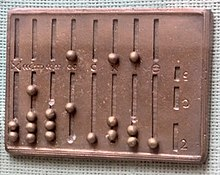
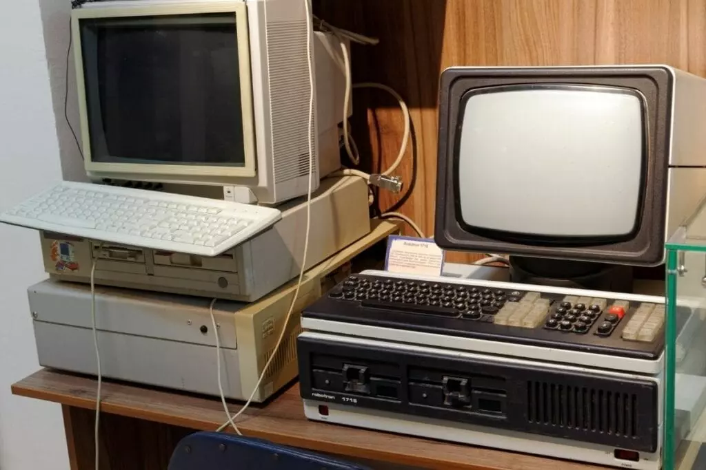

Historia komputerów w pigułce
 Historia maszyn analitycznych zaczęła się znacznie wcześniej niż budowa komputera. Już w czasach starożytnych, ludzie próbowali przyspieszyć swoje obliczenia, co pchało ich do tworzenia najróżniejszych narzędzi. Na początku były to proste liczydła, które z czasem zamieniono na coraz bardziej zaawansowane urządzenia mogące wykonywać wiele różnorodnych operacji jednocześnie.Jedną z najważniejszych osób związanych z szeroko pojętą informatyką jest urodzony w 1646 r. niemiecki polihistor Gottfried Wilhelm Leibniz – zapisał się on na kartach historii matematyki jako twórca rachunku różniczkowego, całkowego, a także arytmetyki binarnej, będącej podstawą obliczeń dzisiejszych komputerów. Uczony uzdolniony był również mechanicznie, co pozwoliło mu stworzyć pierwszą maszynę liczącą, która wykorzystywała zapis zero jedynkowy.
Na podstawie prac Leibniza w 1833 Charles Babbage, opracował urządzenie, którego zasady działania były zbliżone do współczesnych konstrukcji. Ze względu na brak możliwości finansowych i niski poziom wiedzy technicznej nigdy nie zostało ono wykonane. Wielokrotnie sprawdzano jego założenia teoretyczne, które okazały się całkowicie prawidłowe.
Kolejne przełomowe prace, które wpłynęły na historię i rozwój informatyki, pojawiły się w XX w. Dzieła Alana Turinga, który również pracował nad stworzeniem Colosussa, sprawiły, że zupełnie inaczej zaczęto postrzegać możliwości mechanizmów analitycznych, a hipotetyczna maszyna Turinga, nadała kształt, jaki przybierze późniejsza budowa komputera. Podobny wkład w rozwój tej dziedziny miał John von Neumann, który stworzył projekt pierwszej architektury sprzętowej.
Długa droga do współczesności
 Od ogromnych maszyn lat 40. do współczesnych laptopów sprzęt komputerowy musiał przejść bardzo długą drogę. Dopiero pod koniec lat 70. stworzono pierwsze projekty, które mogły być wykorzystywane powszechnie. Pierwszym komputerem ogólnie dostępnym był Apple I, stworzony przez Steve’a Jobsa i Steve’a Woźniaka. Posiadał on procesor o szybkości 1 Mhz, 4 KB ram z możliwością rozszerzenia do 48 KB i pamięć graficzną 1 KB (umożliwiała ona wyświetlanie na ekranie monitora tekstu w 40 kolumnach i 24 wierszach). Urządzenie zostało dobrze przyjęte, co pozwoliło założycielom firmy Apple na rozpoczęcie prac nad kolejnymi modelami.W latach osiemdziesiątych swoje sukcesy święciły takie komputery jak IBM PC, który był konstrukcją naprawdę udaną. Był on kompatybilny z większością sprzętu i akcesoriów dostępnych na rynku, przez co konkurował z równie popularnym w tamtych czasach Macintoshem 128 k produkowanym od 1984 r. Lata osiemdziesiąte XX w. to również wysyp innych urządzeń, które były mniej lub bardziej popularne.
Jednym z najlepiej sprzedających się urządzeń na całym świecie był komputer Commodore 64, który był reklamowany jako najlepsza platforma do gier, zresztą nie było to kłamstwem, gdyż na tym sprzęcie można było zagrać w setki tytułów. Oprócz gier, maszyna była w pełni funkcjonalna, pozwalała na pracę w arkuszu kalkulacyjnym, edycję tekstu, a także miała zainstalowane proste kompilatory ówczesnych języków programowania.